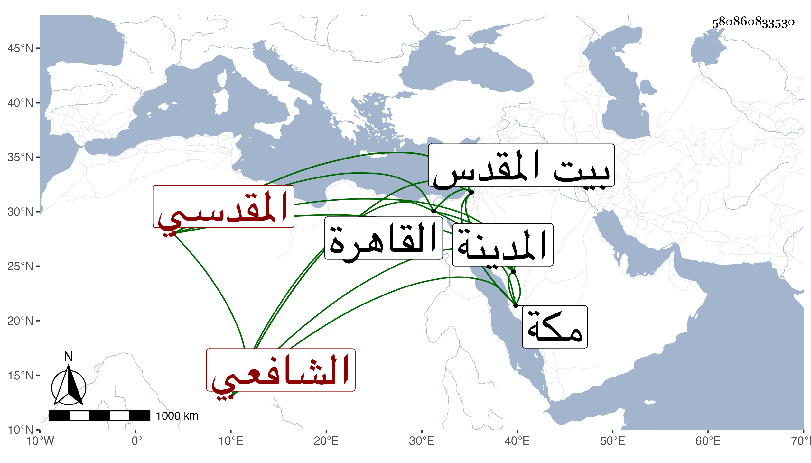

0902Sakhawi.DawLamic.ITO20230111-ara1.EIS1600.580860833530
Biography ID: 580860833530
770
محمد بن عبد الرحمن بن محمد بن إسماعيل بن علي بن الحسين خير الدين أو زين الدين أبو الخير بن الزين القلقشندي المقدسي الشافعي أخو عبد الكريم الماضي وابن أخي التقي أبي بكر الآتي وهو بكنيته أشهر . ولد في سنة اثنتين وعشرين وثمانمائة ببيت المقدس وأحضره أبوه ببلد الخليل وهو في الثانية على محمد بن علي بن البرهان وأحمد بن حسين بن النصيبي وعلي بن إسماعيل القصراوي المسلسل وجزء البطاقة وجزء ابن عرفة ومشيخة قاضي المرستان الصغرى والحديث الأول من كل من مجالس الخلال العشرة ومن المنتقى من الغيلانيات ومن ثمانيات النجيب للعلائي ومن نسخة إبراهيم بن سعد وكذا أحضر فيها على إبراهيم بن حجي والخطيب التدمري الخليليين أصحاب الميدومي وفي الثالثة في ربيع الآخر سنة خمس وعشرين جزء البيتوتة على محمد بن يوسف بن عثمان التازي المغربي وفي الرابعة على الأمير ناصر الدين محمد بن محمد بن صلاح الدين محمد بن عمر الطوري ثلاثيات الدارمي بسماعه على جده الصلاح المذكور بسماعه على زينب ابنة شكر وكذا سمع بعد ذلك وقبله أشياء على القبابي وابن المصري وعائشة الحنبلية وطائفة ، ولما كنت في بيت المقدس لازمني في سماع ما حصلته وأجاز له جماعة منهم عبد القادر بن إبراهيم الأرموي وعبد الرحمن بن محمد بن طولوبغا والشمس الشامي والولي العراقي والنور الفوي ، واستقر في تدريس الطازية والكريمية شريكا لابن عمه أبي الحرم ومشيخة الحديث بالأقصى وغير ذلك من التصادير ونحوها كالإعادة بالصلاحية وحج غير مرة منها في سنة ثلاث وخمسين صحبة الزين عبد الباسط وسمع بالمدينة ومكة أشياء ومما سمعه على أبي البقاء بن الضياء رفيقا لابن أبي شريف بقراءة الديمي الأربعين المختارة لابن مسدي ، ودخل الشلام وكذا القاهرة غير مرة منها في سنة تسع وثمانين ورسم عليه ونزل عن بعض وظائفه وحدث باليسير ولم يتصون مع خفة عقل وسرعة حركة .
